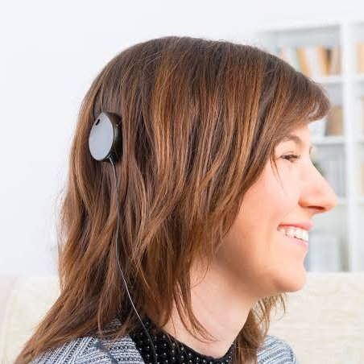
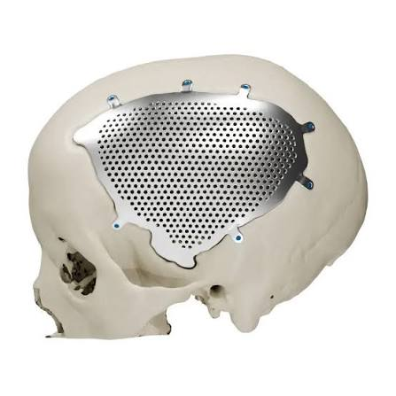
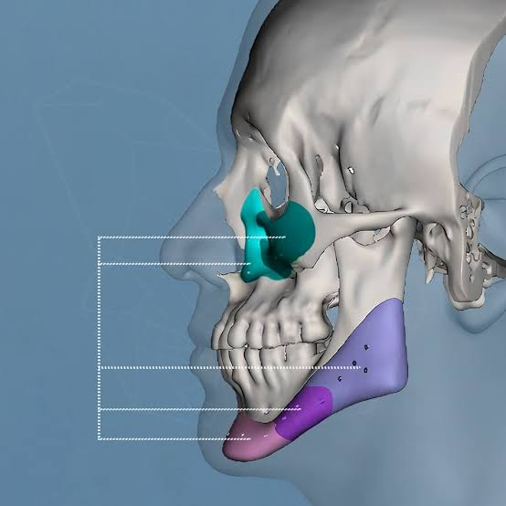
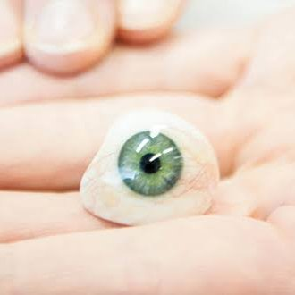
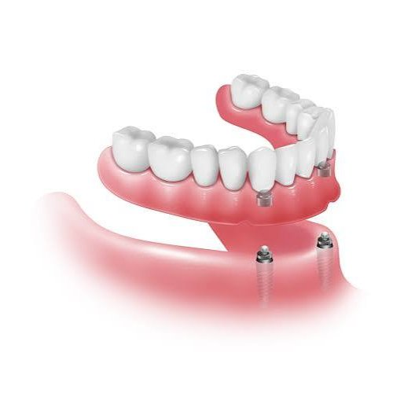

Infografías sobre prótesis de la cabeza
Encuentra los diferentes implantes y prótesis de la cabeza.

Implante Auricular Estético
La prótesis auricular externa es un tipo de prótesis que busca reemplazar el pabellón auricular, a veces llamado oreja, con fines estéticos, usualmente causado por microtia o anotia, que son causados por afecciones congénitas, oncológicas o traumáticas.
- Jóvenes
- Estético

Implante Coclear
Es un dispositivo electrónico que estimula el nervio auditivo y que permite brindar audición a personas con sordera severa. Se compone de dos partes, una externa, que es un procesador (micrófono), que capta los sonidos, los procesa y los envía al componente interno, que consta de un receptor y de electrodos que se insertan en la cóclea, lo que permite la audición. Trata la hipoacusia.
- Jóvenes
- Funcional

Implante Craneofaciales
Un implante o una prótesis craneofacial es un dispositivo que se coloca en la parte de la bóveda craneal y la zona facial para asemejar su funcionalidad y geometría. Se usan para tratar traumatismos, procesos oncológicos, defectos de nacimiento, etc, por lo que reemplazan la función estructural del lugar donde se encuentren.
- Jóvenes
- Estructural

Implante Faciales Estéticos
Los implantes faciales estéticos son aquellos que su única función es cambiar la forma, tamaño o posición de alguna facción de la cara con un fin estético.
- Jóvenes
- Estético

Implante Oculares
Los implantes oculares son cualquier dispositivo, tejido o elemento que se introduce en el globo ocular con diferentes funciones, ya sea estética, mejorar el funcionamiento de los ojos, el reemplazo de alguna de sus estructuras o la optimización de los ojos.
- Jóvenes
- Estético/Funcional

Implante y Prótesis Dentales
Las prótesis dentales son elementos artificiales creados para sustituir la ausencia de dientes y recuperar la funcionalidad de la boca. Los implantes dentales son raíces artificiales de titanio que imitan a un diente natural, y estos se fijan en el hueso de la mandíbula. Los implantes entonces son como la raíz y las prótesis como la corona del diente.
- Jóvenes
- Funcional